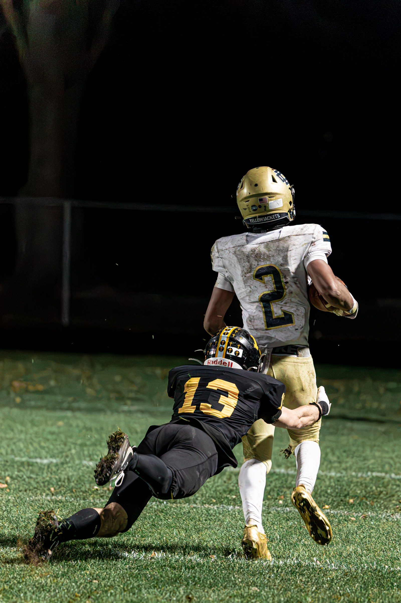
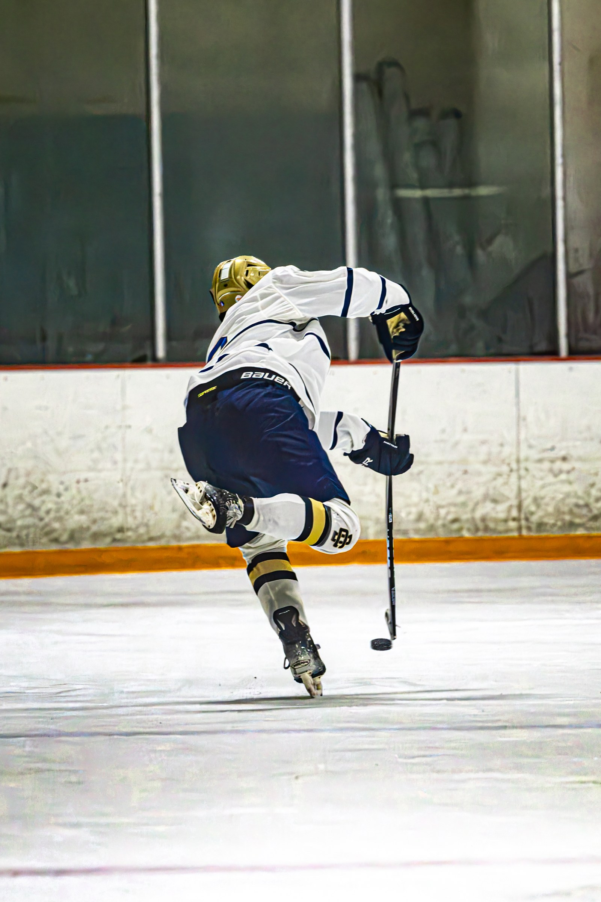
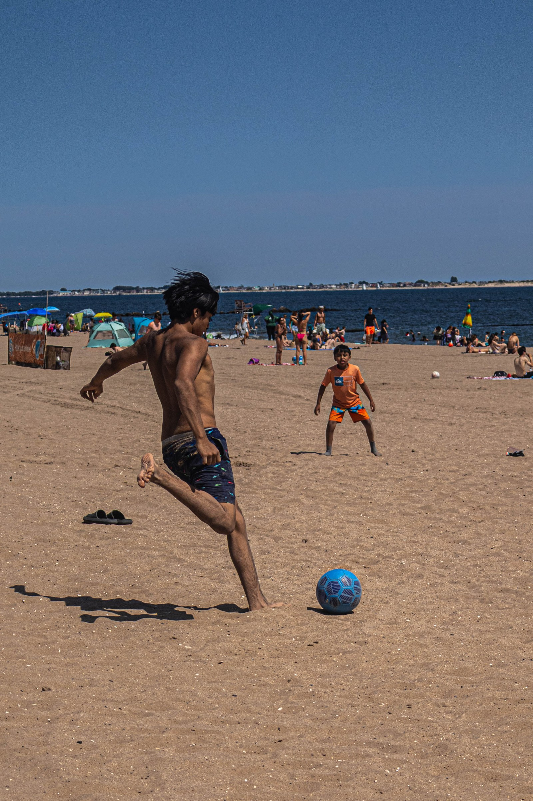
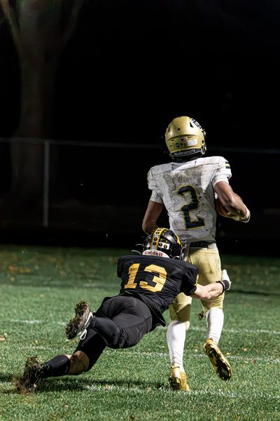
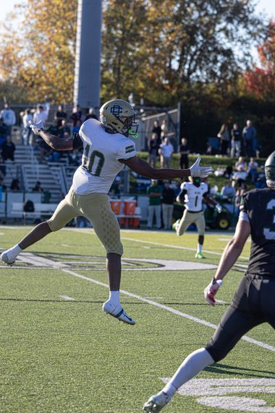
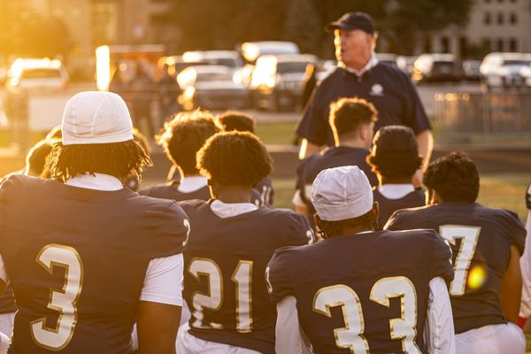

01 Football · 653 photos
Footballunder the lights.
Varsity and JV games and practices: the snap, the run after the catch, the sideline and the post-game huddle.
See football photos →
Metro Detroit · Michigan
Michigan Sports Photographer. Football, hockey, soccer and tennis, from the sideline.
Scroll
Canon EOS R7 · RF 70–200mm f/2.8L
I'm Garrett Erickson, a Michigan sports photographer covering high school football, soccer, tennis and volleyball across Metro Detroit.
01 About
Most of my work happens on the sideline: varsity and JV football under the lights at Detroit Country Day, soccer against Cranbrook and Cass Tech, tennis match days at Seaholm and Liggett, and volleyball in the gym. I shoot the play, the huddle and the bench, so every athlete has photographs worth keeping.
Away from the field I shoot architecture and street, including car meets along Woodward and a stretch of work made in New York. I care about light, structure, and the moment a scene resolves into something worth keeping.
I shoot whole teams and individual athletes, and I turn work around fast: individual sessions are guaranteed back within 24 hours.

01 Football · 653 photos
Varsity and JV games and practices: the snap, the run after the catch, the sideline and the post-game huddle.
See football photos →
02 Hockey · 258 photos
Varsity hockey from the boards: the rush up the ice, the save, and the bench when it goes in.
See hockey photos →
03 Soccer · 171 photos
Varsity and JV soccer: headers, saves, celebrations and the team talk at half time.
See soccer photos →
04 Tennis · 159 photos
Match days and practices, singles and doubles: the serve toss, the stretch for a wide ball, the handshake at the net.
See tennis photos →Whole-roster shoots with a team photo and a gallery for every athlete, or a one-on-one session for senior posts, recruiting profiles and social media.
Get a quote →Basketball, hockey, lacrosse, baseball, softball, swimming, track and field, and cross country, plus car meets and other events. If it happens in Michigan, ask.
Get a quote →Where I shootBased in Metro Detroit. I regularly shoot in Detroit, Birmingham, Bloomfield Hills, Beverly Hills, Royal Oak, Troy, Southfield, Grosse Pointe and Dearborn, across Oakland, Wayne and Macomb counties, and anywhere else in Michigan on request.
 DCDS Varsity Hockey vs Dexter
DCDS Varsity Hockey vs Dexter

DCDS Varsity Football vs Lutheran North Lawrence Tech Football vs Saint Francis
DCDS Varsity Football vs Father Gabriel Richard Cass Tech vs King — PSL Championship at Ford Field
Denby vs Central — PSL Championship at Ford Field
Cass Tech vs King — PSL Championship at Ford Field
Denby vs Central — PSL Championship at Ford Field
 DCDS Varsity Football vs Cranbrook — Homecoming
DCDS Varsity Football vs Cranbrook — Homecoming

DCDS Varsity Football vs Loyola03 Availability · Booking now
Open dates are first come, first served. Pick a date that works and send it through the quote form — I'll confirm by email.
Dates load in a moment — or just ask for the date you want.
04 Get a quote · Free · no obligation
There are no set prices. Every shoot is different, so tell me what you're booking and I'll email you a quote.
05 Questions
Every shoot is quoted to fit: the price depends on the sport, how many athletes, how long, and where. Fill in the quote form and I'll email you a price. Quotes are free, with no obligation.
Individual sessions are guaranteed back within 24 hours, and events within 48 hours. If you need photos the same day, say so in your quote request.
I'm based in Metro Detroit and have shot games at Detroit Country Day, Seaholm, Cranbrook, Liggett, Cass Tech, Divine Child, Redford and Holt. I'll travel anywhere in Michigan. See photos from every team game on the game photos page.
Yes. A team shoot covers the whole roster in one session, includes a team photograph, and gives every athlete their own gallery of action and individual frames.
Yes. Personal and social use is included with every session, which covers Instagram, recruiting profiles and highlight reels. Commercial use is available on request.
Open the photograph in the portfolio and press Request removal. You don't have to explain why, and I'll take it down.
Send a request through the quote form and I'll reply with a price and to confirm the date. You can also email garrettoscarerickson@gmail.com or DM @shot_by_ge on Instagram.
Michigan · booking now